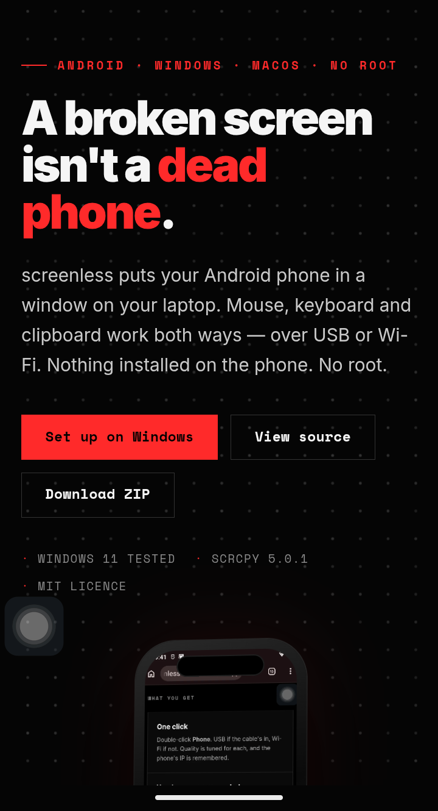

▶
One double-click
The launcher uses USB if the cable is in, otherwise Wi-Fi to the last known IP. Quality is picked per transport, so weak Wi-Fi drops fewer frames.
Android · Windows · macOS · No root
screenless puts your Android phone in a window on your laptop. Mouse, keyboard and clipboard work both ways — over USB or Wi-Fi. Nothing installed on the phone. No root.
scrcpy does the mirroring. screenless is the packaging: one launcher, sane defaults, a reversible tune-up and a runbook an AI can follow.
The launcher uses USB if the cable is in, otherwise Wi-Fi to the last known IP. Quality is picked per transport, so weak Wi-Fi drops fewer frames.
scrcpy pushes a tiny server over adb each time and removes it when you quit. No APK, no root, no account.
Plug in once and it re-arms wireless mode. After a phone restart, plug in, run Phone, unplug.
Animations 0.5×, stay-awake and an optional debloat list. Every change has an undo.
AGENTS.md tells OpenCode, Claude Code or Codex how to set up a stranger's laptop, step by step.
Experimental: Claude taps, swipes and types. Anything that pays, sends, orders or deletes waits for a y/N.
A moto g30 on the end of a USB cable, driven entirely from the laptop. The phone's own display stays off on purpose.



[screenless] Windows: Microsoft Windows 11 Pro [screenless] scrcpy: scrcpy 5.0.1 [screenless] adb: Android Debug Bridge 1.0.41 [screenless] Phone: ZF652793NW device (moto_g_30_) over USB [screenless] Ready. Double-click "Phone" on the Desktop.
Everything below came from the moto g30 over adb, not from a spec sheet.
No admin rights and no Microsoft Store. The installer downloads scrcpy into your user folder and adds it to PATH.
Settings → About phone → tap Build number seven times. Then Developer options → USB debugging ON and Disable ADB authorisation timeout ON.
One script installs scrcpy, checks adb and puts a Phone shortcut on the Desktop.
git clone https://github.com/Vighnesh2514/screenless-android C:\screenless
cd C:\screenless\windows
powershell -ExecutionPolicy Bypass -File .\install.ps1
# optional: check tools, phone and saved IP
powershell -ExecutionPolicy Bypass -File .\doctor.ps1
First time only: tap Always allow on the phone. The mirror opens and the phone's display turns off.
Unplug and double-click Phone again. Phone and laptop must be on the same network — 5 GHz is the difference between live and stutter.
On a Mac, use Cmd instead of Alt.
Not the mirroring software. On a 4 GB phone it was RAM pressure and a 2.4 GHz hotspot.
| Measurement | Before | After | What changed |
|---|---|---|---|
| Free RAM | 887 MB | 1,558 MB | 12 background bloat apps disabled |
| Animations | 1.0× | 0.5× | Screens open about twice as fast |
| Mirror black on Wi-Fi | Yes | No | Stay-awake that works without charging |
| Wi-Fi ping, 2.4 GHz | 166 ms avg | — | Network-bound: use 5 GHz or USB |